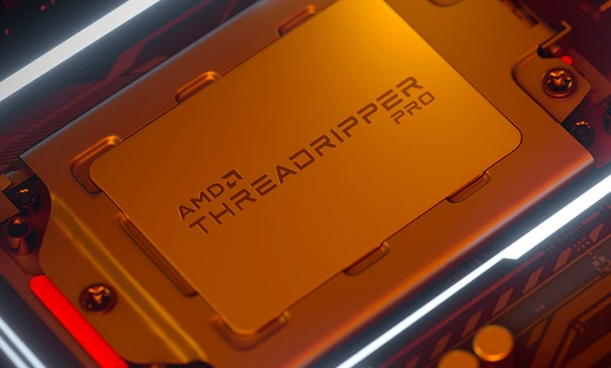

ସୂଚୀପତ୍ର
ଏହି ଭାଗରେ ପଢିବା ଲାପଟପର କିଛି ଗୁରୁତ୍ଵପୂର୍ଣ ଅଂଶ ବା କମ୍ପନେଣ୍ଟ (components) ।
ପ୍ରୋସେସର (Processor):
 ଏକ ଏଏମଡ଼ି ପ୍ରୋସେସର ©Advanced Micro Devices, Inc. ଦୁଇଟି କମ୍ପାନୀର ପ୍ରୋସେସର ସବୁଠାରୁ ଅଧିକ ବିକ୍ରି ହୋଇଥାଏ, ତାହା ହେଲା ଏଏମଡ଼ି (AMD) ଓ ଇଣ୍ଟେଲ (Intel) । ପ୍ରୋସେସର ତିଆରି ମଧ୍ୟ ଦୁଇ ପ୍ରକାରର ୬୪ବିଟ ଓ ୩୨ବିଟ । ନିତିଦିନିଆ ବ୍ୟବହାର ପାଇଁ 32 ବିଟ କିମ୍ବା 64 ବିଟ ସହିତ କିଛି ଯାଏ ଆସେ ନାହିଁ ।
କମ ଶକ୍ତିଶାଳି: ଇଣ୍ଟେଲର ଆଟମ, ସେଲେରନ, କୋର2ଡ଼ୁଓ; ଏଏମଡ଼ି ଏ୮ରୁ କମ ପ୍ରୋସେସର, ସେମପ୍ରାନ ପ୍ରୋସେସର ।
ମାଧ୍ଯମିକ: ଇଏମଡ଼ି ୯ ଉପର ସିରିଜ, ରାଇଜେନ ୩, ଆଥଲନ ସିରିଜ ଇତ୍ୟାଦି; ଇଣ୍ଟେଲର ପେନ୍ଟିୟମ କୋର ଆଇ ୩ (i3) ସିରିଜର ।
ଉଚ୍ଚକୋଟିର: ଇଣ୍ଟେଲର ଆଇ୫ ଓ ୭, ଆଇ ୯ ଇତ୍ୟାଦି । ଏଏମଡ଼ିର ରାଇଜେନ ୫, ୭, ଥ୍ରେଡଡ୍ରିପର; ଏଫଏକ୍ସ ସିରିଜ ଆଦି ।
ଆସନ୍ତୁ ଏବେ ପ୍ରୋସେସର ସମ୍ବଦ୍ଧରେ ଅଧିକ ଜାଣିବା ।
-
କୋର (Core): କୋର ହେଉଛି ପ୍ରୋସେସର ଭିତରେ ଥିବା ଆଉ ଏକ ପ୍ରୋସେସର, ଏହାର ସଂଖ୍ୟା ଯେତେ ଅଧିକ ସେତେ ମଲ୍ଟିଟାସ୍କିଂ ବା ଭିନ୍ନ ଭିନ୍ନ କାର୍ଯ୍ୟ ଏକା ସମୟରେ ନିର୍ବାହିତ ହୋଇପାରେ ଯେପରିକି ଇଣ୍ଟରନେଟରେ ଭିଡିଓ ଦେଖିବା ସାଙ୍ଗକୁ ଲେଖା ଲେଖି ଇତ୍ୟାଦି ।
-
କ୍ଳକ ସ୍ପିଡ଼ (Clock Speed): ଏହା ହେଉଛି ପ୍ରତି ସେକେଣ୍ଡରେ କମ୍ପ୍ୟୁଟର ଦେଉଥିବା ନିର୍ଦ୍ଦେଶାବଳୀକୁ କେତେ ଶୀଘ୍ର ସମ୍ପାଦନ କରୁଛି । ଏହାକୁ ଗିଗାହଟସ୍(Ghz) ରେ ମପାଯାଏ ତେଣୁ ଏହା ଯେତେ ଅଧିକ ସେତେ ଭଲ । ଦୈନନ୍ଦିନ କାର୍ଯ୍ୟ ପାଇଁ ଅତି କମ୍ରେ ଦୁଇ ଗିଗା ହଟ୍ସ ହେଲେ କାଫି ।
-
କ୍ୟାସ (Cache): ଏହା ସିପିୟୁରେ ଥିବା ଏକ ଛୋଟ ମେମୋରୀ ଯାହା, ଯାହା କମ୍ପ୍ୟୁରଟରେ ସମ୍ପାଦିତ ହେଉଥିବା କାର୍ଯ୍ୟର ନିର୍ଦ୍ଦେଶାବଳୀ ଗୁଡିକୁ କିଛି କ୍ଷଣ ପାଇଁ ଷ୍ଟୋର କରି ରଖି ଥାଏ । ଏହା ଯେତେ ଅଧିକ ସେତେ ଭଲ ।
-
ହାଇପର ଥ୍ରେଡିଙ୍ଗ (Hyper-Threading): ଏହା ଦ୍ବାରା ପ୍ରତି କୋର ଆଉ ଏକ କୋର ପରି କାମ କରେ, ଯାହା ଦ୍ୱାରା ଏକ ପ୍ରୋସେସର ଆହୁରି ଶକ୍ତିଶାଳୀ ହୋଇଉଠେ ।
-
ଜେନେରେସନ (Generation): ଏହା ହେଉଛି ପ୍ରୋସେସର ମଡେଲର ନିର୍ମାଣ ସମୟ, ଏଣୁକରି ଏକ ପ୍ରୋସେସର ମଡେଲ ଯେପରିକି ଆଇ ୩ (i3) ଏହାର ଜେନେରେସନ ଗୁଡିକ ହେଉଛି - ପଞ୍ଚମ (5th) ଯାହା ଦୁଇ ହଜାର ଚଉଦ ମସିହାରେ ବଜାରକୁ ଆସିଥିଲା, ସେହିପରି ଅଷ୍ଟମ (8th) ଯାହା ଦୁଇ ହଜାର ସତରରେ ରିଲିଜ ହୋଇଥିଲା ।
ରାମ: ଏହାର ମଧ୍ୟ ପ୍ରକାର ଅଛି । ତେବେ ଆପଣ କିଣିଲାବେ ଡ଼ିଡ଼ିଆର୪ କିଣନ୍ତୁ ।
-
ଭିଡିଓ ରାମ ବ ଗ୍ରାପିକ୍ସ ର୍ୟାମ: ଏହା ଉଚ୍ଚକୋଟିର ଚଳଚିତ୍ର ଦେଖିବା ସହିତ, ଗେମ ଖେଳି ହୁଏ । ଅଧିକାଂଶ ଇଏମଡ଼ି ପ୍ରୋସେସରେ ଗ୍ରାଫିକ୍ସ ଦିଆଯାଇଥାଏ । ଏହା ଅତି କମରେ ୧୨୮ଏମବି ହେବା ଦରକାର ।
ଷ୍ଟୋରେଜ ବ୍ୟବସ୍ଥା:
-
ହାର୍ଡ ଡିସ୍କ: ଏହାର ଦର କମ ହୋଇଥାଏ ଓ ଡାଟା ଟ୍ରାନ୍ସ୍ଫାର ର ବେଗ କମ ଓ ପରମାୟୁ ମଧ୍ୟ କମ ହୋଇଥାଏ ।
-
ଏସଏସଡ଼ି: ଦର ଅଧିକ, ପରମୟୁ ଅଧିକ ଓ ଡାଟା ଟ୍ରାନ୍ସଫରର ବେଗ ସର୍ବାଧିକ ।
ସ୍କ୍ରୀନ (Screen): ଲାପଟପର ଆକାର ସ୍କ୍ରିନର ଆକାରକୁ ନେଇ ନିର୍ଦ୍ଧାରିତ ହୋଇଥାଏ, ଅତି କମରେ ଚଉଦ ଇଞ୍ଚର ସ୍କ୍ରିନ କିଣନ୍ତୁ ସ୍କ୍ରିନ ବିଷୟରେ ଅଧିକ ଜାଣିବା ପାଇଁ ଆମର ଏହି ଗାଇଡଟି ପଢନ୍ତୁ ।
ବ୍ଯାଟେରୀ: କିଣିବା ପୂର୍ବରୁ ବ୍ୟାଟେରୀର କ୍ଷମତା ନିଶ୍ଚୟ ମାପି ନିଅନ୍ତୁ ।
ଅତିରିକ୍ତ ସୁବିଧାମାନ:
ଟଚ ସ୍କ୍ରୀନ - ଫୋନ ପରି ଏହାର ସ୍କ୍ରୀନକୁ ଟଚ କରି କାର୍ଯ୍ୟ କରିହୁଏ ।
ବ୍ୟାକଲାଇଟ କିବୋର୍ଡ: ଏହା ଅନ୍ଧାରରେ ମଧ୍ୟ ଚମକିଥାଏ ।
ସିଡ଼ି, ଡିଭିଡି ଡ୍ରାଇଭ: ଏହା ଦ୍ବାରା ଆପଣ ପାଖରେ ଥିବା ସିଡ଼ି ଡିସ୍କ କୁ ଲାପଟପରେ ପୁରାଇ ଡାଟା କପି ସହ ପ୍ଲେ କରିପାରିବେ । ତେବେ ଏହାର ଉପଯୋଗ କମିବାରୁ, ଏଗୁଡିକର ଆବଶ୍ୟକତା ଆଦୌ ଦରକାର ନାହିଁ ।
ସଂଯୋଗ:
- ୟୁସେବୀ 3 ପୋର୍ଟ ଥିଲେ ଆପଣ ବହିର୍ମୁଖୀ ହାର୍ଡ ଡିସ୍କ କୁ ସଂଯୋଗ କରିପାରିବେ, ତେଣୁ ୟୁସେବୀ 3 ନିଶ୍ଚେ କିଣନ୍ତୁ
- ଏହା ଛଡା ମେମୋରୀ କାର୍ଡ ପାଇଁ ଜାଗା ଥିଲେ ଆହୁରି ଉତ୍ତମ ।